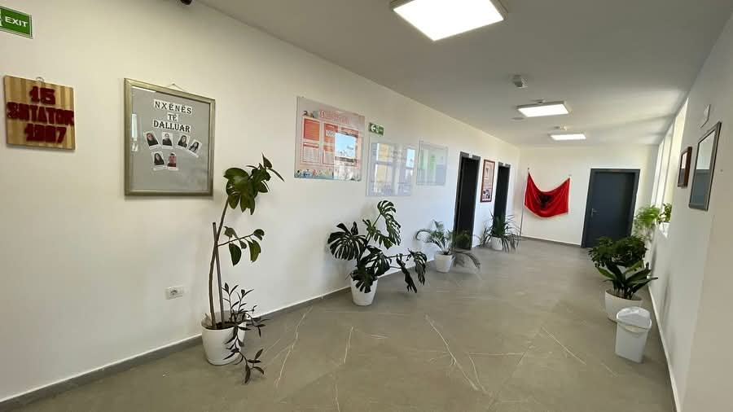
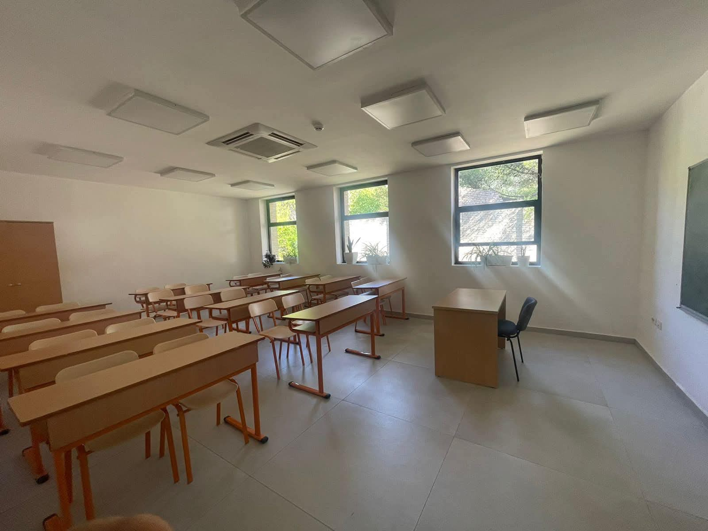
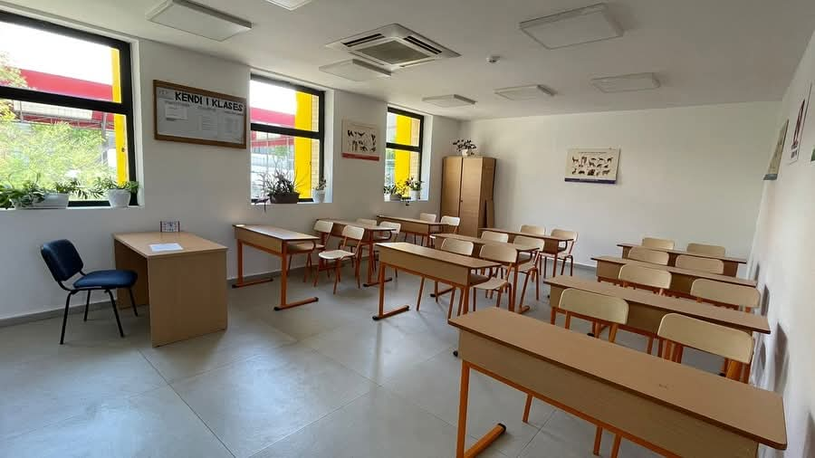
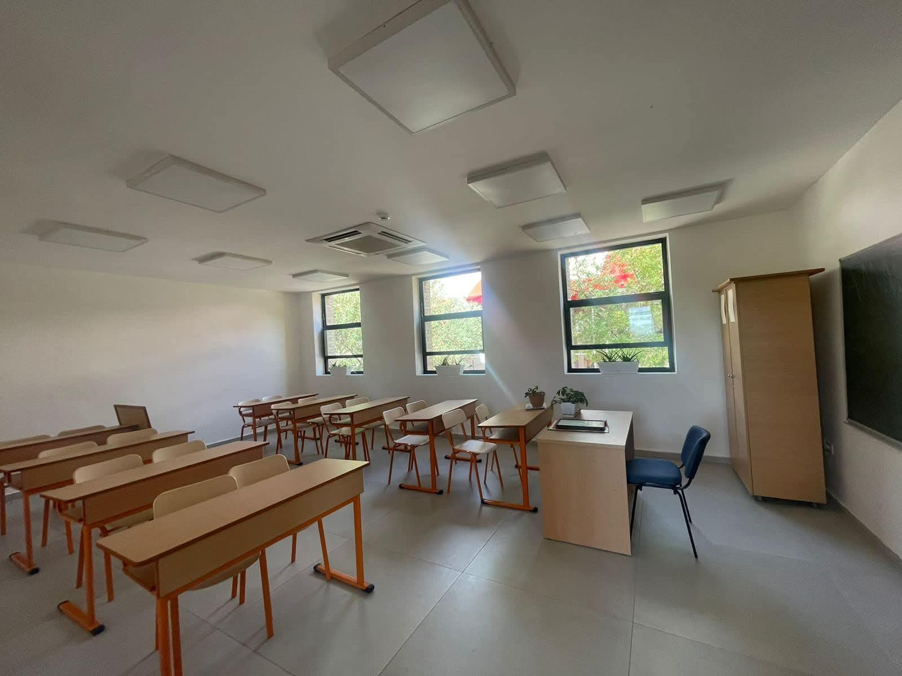

Viti shkollor 1971-1972 ka hyrë në historinë e kësaj shkolle si një vit tepër i veçantë, sepse për herë të parë u hap Shkolla e Mesme pa shkëputje nga puna, dega Agronomi. Në vitin mësimor 1986-1987 u vu në punë ndërtesa e re e shkollës, sot Gjimnazi. Deri në këtë periudhë funksiononte Shkolla e Mesme e Bashkuar (8-vjeçare +bujqësore 4 vjeçare me/pa shkëputje nga puna). Viti mësimor 1987-1988 shënon dhe fillimin e arsimit të mesëm të përgjithshëm në Milot.